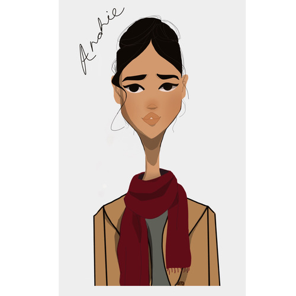

Andrea Torres Munoz
I am a third year university student majoring in Social and Behavioral studies as well as Administrative studies, and I live in a small city near the Mexican-American border in southern California called Calipatria. I’m currently twenty two years old and spend most of my time reading, writing, and studying for the multiple courses I am enrolled in. My interests include designing digital art commissions, volunteering at a freelance writing company, and experimenting with baking recipes I find online.
I am currently a full time university student, however, in the past I have worked in customer service, home maintenance, education (as a teaching assistant), cosmetology, freelance writing and editing, tutoring, and childcare. Occasionally, if the opportunity presents itself, I will carry out art commissions for clients and offer cosmetic services for events like weddings, photo shoots, holidays and birthdays.
I am fluent in English and Spanish, and understand some French as well. In 2018, I offered tutoring sessions for people interested in learning English at a basic and intermediate level, and provided translating assistance over the phone in Moreno Valley, San Bernardino, and Riverside California.
In addition, I have experience in organizing and developing educational programs for children at multiple volunteer institutions on a weekend basis. For three years I planned class content, organized art, english and play time schedules, attended teaching seminars, and delivered lectures with the aid of two or three other volunteers.
Experience
Art
• Create acrylic and graphite renditions of portraits
• Offer cosmetic services for special events
• Design digital illustrations of characters for authors
Teaching Assistant
• Provided grading, printing and office assistance to the English and Math department
• Offered tutoring to students who required additional aid with class material
Teacher
• Created educational objectives
• Planned and reviewed subject material
• Organized appropriate lecture schedules
Education
University of California Riverside
Riverside City College
Riverside City College
Portfolio
